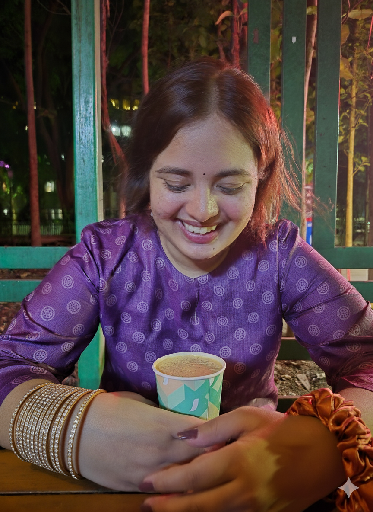
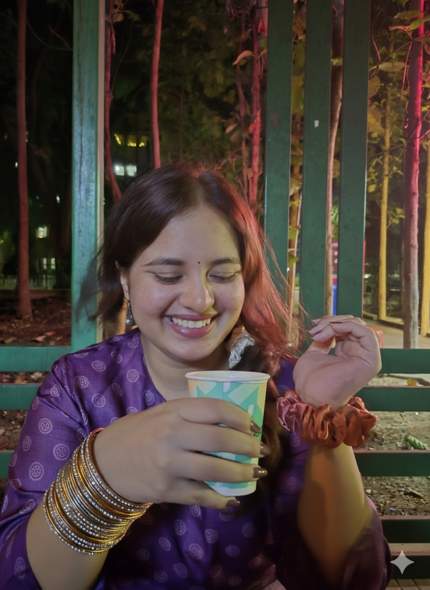
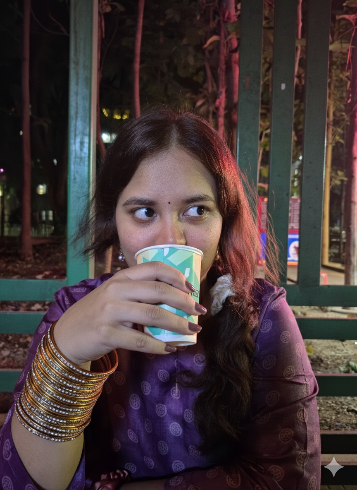
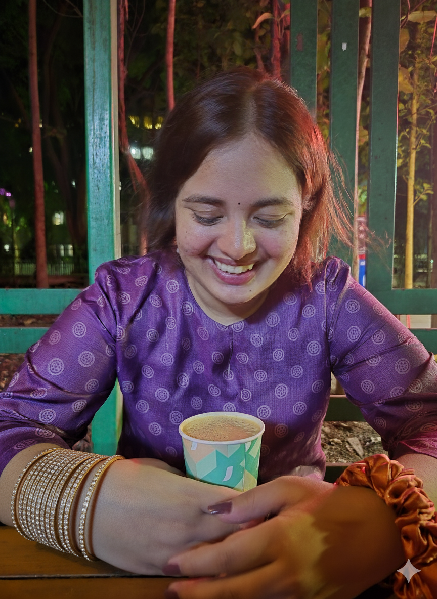
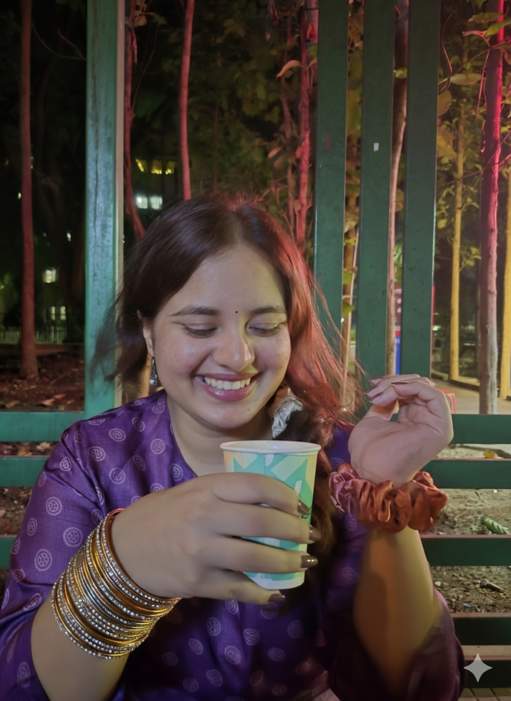
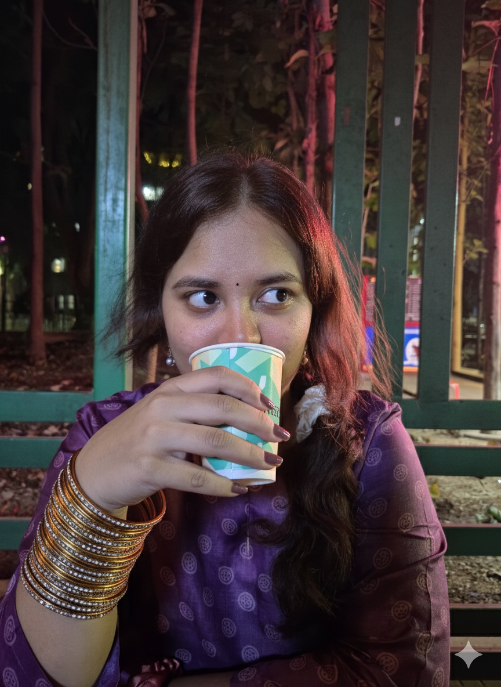
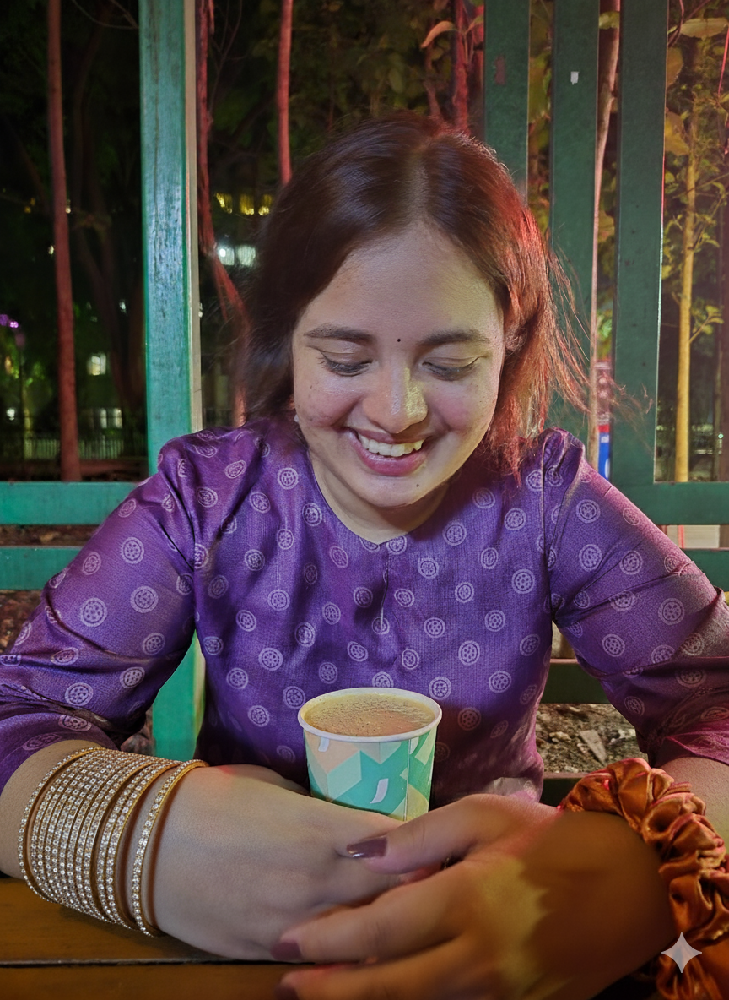
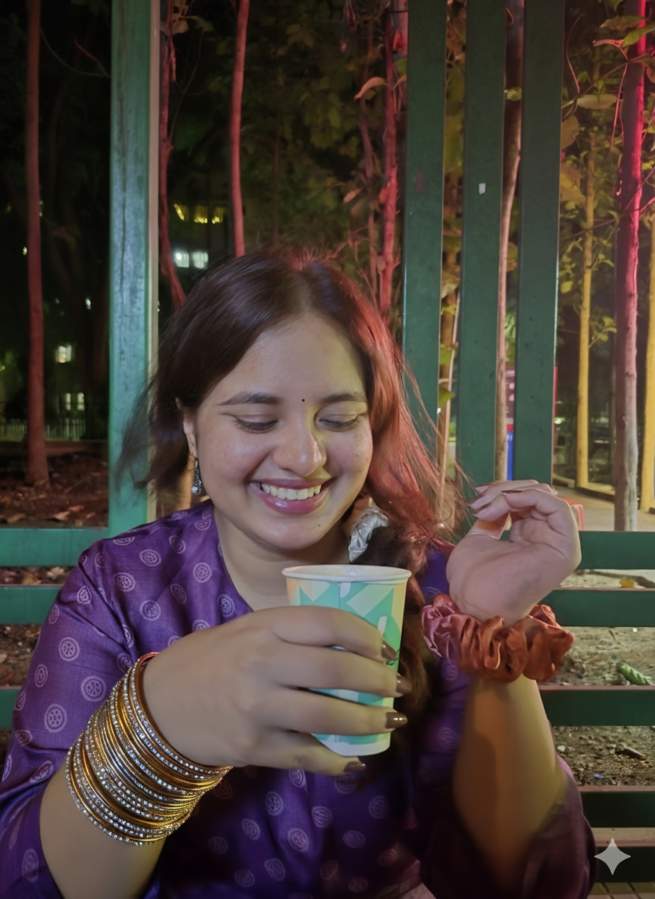
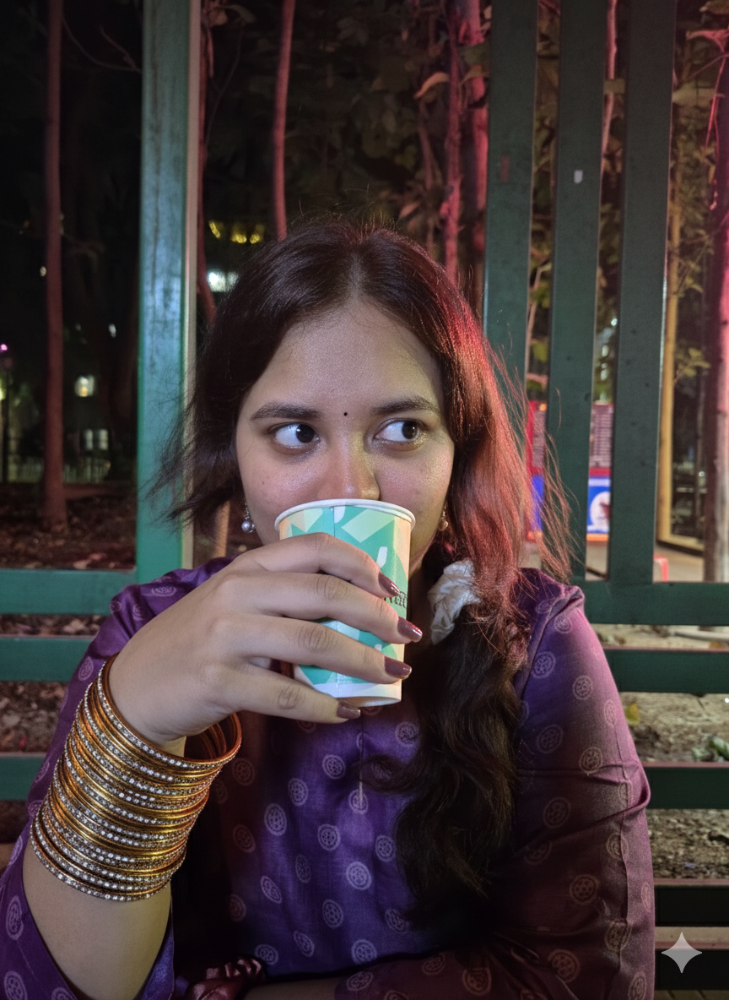

For Your Healing
A futuristic journey to ease your mind and bring a smile to your face
 






Designed to bring you comfort and joy
A futuristic journey to ease your mind and bring a smile to your face



Designed to bring you comfort and joy
I hope this brought a smile to your face and made you forget about your headache for a while. You're amazing just the way you are!